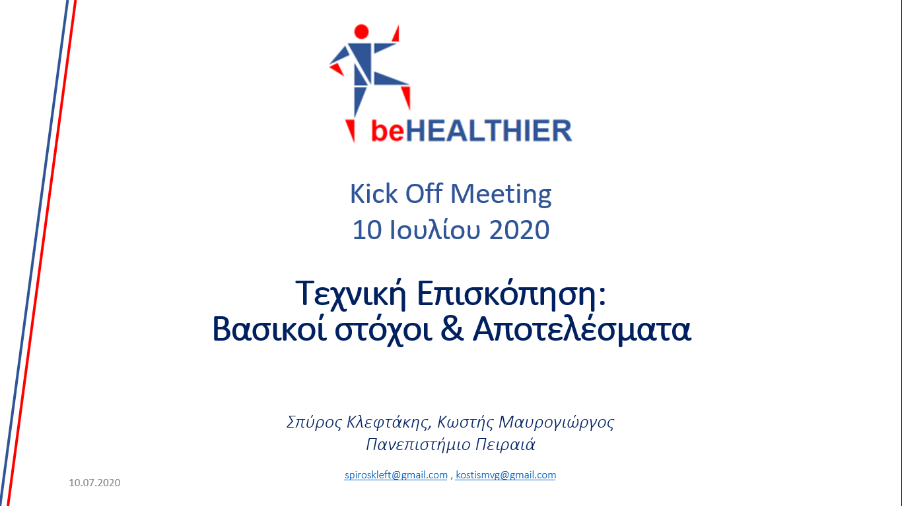

Αρχική συνάντηση
10/07/2020

Πραγματοποιήθηκε με επιτυχία το kick-off meeting του beHEALTHIER, με συμμετοχή όλων των φορέων. Συζητήθηκαν βασικά ζητήματα που αφορούν το έργο,
όπως το project coordination και το technical coordination. Δόθηκαν... κατευθύνσεις οι οποίες καθορίζουν την άριστη συνεργασία μεταξύ των φορέων.
Τέλος, ορίστηκαν με σαφήνεια οι στόχοι που καλείται να επιτύχει το έργο.
Περισσότερα